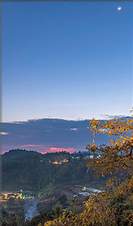
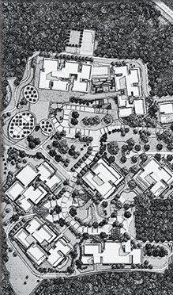
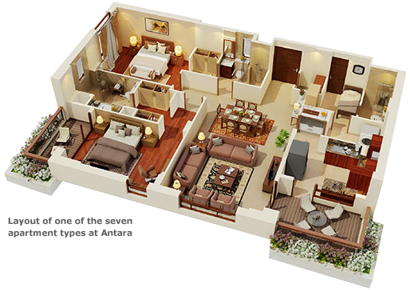
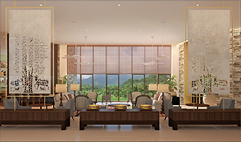
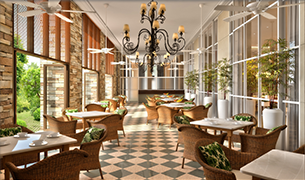
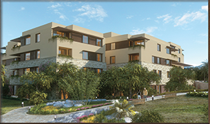
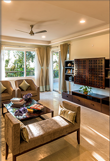
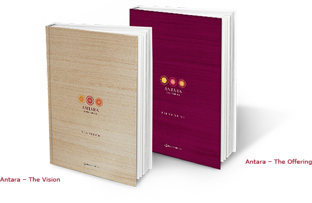
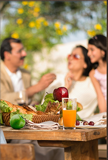

    <!doctype html>
<html class="no-js">
    <head>
        <meta charset="utf-8">
        <title>ANTARA Senior LIving</title>
        <meta name="description" content="">
        <meta name="viewport" content="width=device-width">
        <!--<link rel="shortcut icon" href="/favicon.ico">
         Place favicon.ico and apple-touch-icon.png in the root directory -->

        <link rel="stylesheet" href="styles/main.css">

        <!-- Bootstrap Default JS -->
        <style type="text/css">
        p[class*=ans]{
            display: none;
        }
        .question{
            text-decoration: none;
            cursor:pointer;
            
        }
        p.question>img{
            vertical-align: top;
            padding-right:19px;
        }
        </style>
		<script src="scripts/jquery.js"></script>
    
    <!-- Plugin JavaScript -->
		<script src="scripts/jquery.easing.min.js"></script>
        <script src="scripts/bootstrap.js" type="text/javascript"></script>
		<script src="scripts/custom.js"></script>
 </head>
<body>
<div id="pageContainer">
    <!-- HEADER -->
    <header>
        <div class="innerContainer headerantara">
            <!-- Top Header -->
            <div class="topHeader">
                <a href="#" class="arLogo">Antara Senior Living</a>
                <span class="maxEnt">A MAX Enterprise</span>
            </div>

            <!-- Navigation-->
 <nav>
                <a href="index.html">home</a>  
                <span><a href="our-belief.html">our belief</a>
                    <span>
                        <a href="our-belief.html">The Antara Way</a>
                        <a href="our-board-of-directors.html">Our Board of Directors</a>
                        <a href="our-team.html">Our team</a>
                    </span>
                </span>
                <span><a href="antara-dehradun.html" class="active">antara dehradun</a>  
                    <span>
                        <a href="antara-dehradun.html#ol">OUR LOCATION</a>
                        <a href="antara-dehradun.html#odj">OUR DESIGN JOURNEY</a>
                        <a href="antara-dehradun.html#ls">LIVING SPACES</a>
                        <a href="antara-dehradun.html#laa">LIFE AT ANTARA</a>
                        <a href="antara-dehradun.html#acb">ACB</a>
                        <a href="antara-dehradun.html#download">DOWNLOADS</a>
                        <a href="antara-dehradun.html#faq">FAQS</a>
                    </span>
                </span>
                <span><a href="antara-speak.html">antara speak</a>  
                    <span id="asp">
                        <a href="antara-speak.html">Social media</a>
                        <a href="film.html">film</a>
                        <a href="press.html">press</a>
                    </span>
                </span>
                <a href="max-promise.html">max promise</a>  
                <span> 
                    <a href="get-in-touch.html">get in touch</a>
                    <span id="getocuh">
                        <a href="get-in-touch.html#innerPage">Reach Us</a>
<a href="get-in-touch.html#carer">careers</a>
                    </span>
                </span>
            </nav>
            <div class="navShadow"></div>
        </div>
    </header>

    <!-- Life Handcrafted -->
    <div class="innerContainer" id="innerPage">
        <!-- OUR LOCATION Left Section -->
        <div class="leftSection" id="ol">
            <a href="#ol" class="active">Our location</a>
            <a href="#odj">Our design journey</a>
            <a href="#ls">Living spaces</a>
            <a href="#laa">life at antara</a>
            <a href="#acb">ACB</a>
            <a href="#download">downloads</a>
            <a href="#faq">FAQs</a>
        </div>
        <!-- Right Section -->
        <div class="rightSection">
            <div class="headCont innerPage">
                <h1 class="inner">An ideal location for an ideal lifestyle</h1>
            </div>
            <div class="picCont drd">
                
            </div>
            <div class="drdText">
                <p>The first step to creating the perfect community is choosing the right location. Accordingly, for the first Antara community, we chose 14 pristine acres in Purukul, Dehradun. Renowned for its serene beauty and comfortable weather throughout the year, Dehradun spoils for choice when it comes to stunning mountain ranges, shimmering lakes, lush green trails and places of historic value, all in close proximity to Antara.
                </p>
                <p>Dehradun is well connected by air, road and rail to Delhi and other major cities in India. In the neighbourhood are the spiritual towns of Haridwar and Rishikesh, and hill stations like Mussoorie and Dhanaulti. The natural reserve forests of Rajpur, Galjwari, Rikhauli and Chamasari and the Malsi Deer forest nearby provide the perfect opportunity to explore an interest in wildlife. For those who wish to remain active in business, Dehradun, being the capital of Uttarakhand, is an upcoming growth center.               
                </p>
                <p>Antara’s location in Purukul comes under the wellness and tourism zone of Dehradun’s master plan. The world-class healthcare of a Max Super Specialty hospital is reassuringly just a short drive away. Overlooking one of Dehradun’s picturesque river valleys, with clean air untainted by the effluents of a busy city, clear star-filled nights and warm, sunny days, framed by the Himalayas to the North and the Shivaliks to the South, there’s no better place than Antara to live the next chapter of a well-lived life.
                </p>
            </div>
            <!-- <p><span>To watch a video showcasing our location, please click here </span></p> -->
                <!-- Scroll -->
            <div class="scroll sml">
                <a href="#odj" class="scrollLink down">SCROLL DOWN <span></span></a>
            </div>
        </div>

        <div class="clearall"></div>

        <!-- OUR DESIGN JOURNEY Left Section -->
        <div class="leftSection" id="odj">
            <a href="#ol">Our location</a>
            <a href="#odj" class="active">Our Design Journey</a>
            <a href="#ls">Living spaces</a>
            <a href="#laa">life at antara</a>
            <a href="#acb">ACB</a>
            <a href="#download">downloads</a>
            <a href="#faq">FAQs</a>
        </div>
        <!-- Right Section -->
        <div class="rightSection">
            <div class="headCont innerPage">
                <h1 class="inner">Our Design Journey</h1>
            </div>
            <div class="picCont drd">
                
            </div>
            <div class="drdText">
                <p>Our design journey began with a pioneer of design and architecture, Bradford Perkins who is a true visionary in designing spaces that support independence as we get older. Bradford soon became a friend and a vital partner in Antara's journey, along with his team from the Perkins Eastman office in New York. 
                </p>
                <p>To partner Bradford, Tomeu Esteva of Esteva i Esteva Arquitectura, a boutique design firm in Mallorca, Spain and an expert in creating beauty through design, joined the team to give the community a sense of life and expand on Perkins functionality and detailing.              
                </p>
                <p>As the design journey progressed into execution, Integral Designs crafted the entire landscaping, Arcop Associates joined the team to complete our residential spaces while Studio Lotus gave life to our Clubhouse to truly make it the jewel in the crown of the community.
                </p>
            </div>
           <!--  <p><span>Watch the experts who have meticulously crafted Antara Dehradun speak about the design philosophy and inspiration behind the community.</span></p> -->
                <!-- Scroll -->
            <div class="scroll sml lowHght">
                <a href="#ls" class="scrollLink centerLink down"><span></span></a>
                <a href="#ol" class="scrollLink up"><span></span></a>
            </div>
        </div>  
        
        <div class="clearall"></div>

        <!-- LIVING SPACES Left Section -->
        <div class="leftSection" id="ls">
            <a href="#ol">Our location</a>
            <a href="#odj">Our Design Journey</a>
            <a href="#ls" class="active">Living spaces</a>
            <a href="#laa">life at antara</a>
            <a href="#acb">ACB</a>
            <a href="#download">downloads</a>
            <a href="#faq">FAQs</a>
        </div>
        <!-- Right Section -->
        <div class="rightSection">
            <div class="headCont innerPage">
                <h1 class="inner">Living Spaces at Antara</h1>
            </div>
            <p>The Antara design philosophy is to improve your quality of life through thoughtful design interventions. 
            </p>
            <p><span>There are 7 apartment types in our Dehradun community which are spread over nine Residences, ranging from 130 - 614 sq. m. / 1500 – 6000 sq.ft and priced from INR 1.5 cr to 6.6 cr. To discuss which apartment is right for you, please call us at +91 8860076464/ +91 83929 26464.</span>             
            </p>
            <p>The interiors of each apartment are built to the highest standard and specifications, with elegant imported marble and wood flooring and beautiful finishing touches such as cornices and window ledges conveying a sense of timeless grace. Spacious naturally-lit bedrooms with extended terraces and balconies, a large sun-filled well-ventilated living and dining room and substantial windows for a beautiful view, all bring the magic of the outdoors into your everyday life. Bathrooms have thoughtfully positioned handrails, protective anti-skid tiles and walls clad with ceramic tiles. Tasteful and friendly modular kitchens with granite tops and ample storage space are abutted by a utility balcony. Detailing has been given special attention, such as rounded corners of all edges.
            </p>
            <p>All apartments have round the year climate control for a comfortable indoor ambience with significant savings in energy and maintenance. These and many other design features merge seamlessly to make your Antara apartment in its entirety exude an atmosphere of warmth, comfort and refinement.</p>
            
            <br/>
            <p>An elaborate Clubhouse of approx. 50000 sq.ft. is sited at the end of the main spine of the master plan. The central<br/>idea of the Clubhouse at Antara is to function as a community living space for the residents and their guests  – a wonderful extension to their homes - a place to meet, interact, learn and pamper oneself. It accommodates dining spaces, eat-out verandahs, fine cuisine restaurants, card rooms, a bar, library, arts & craft studio, theatre, indoor games room, indoor heated pool. The clubhouse also has areas for well-being such as a salon, spa, gym, yoga pavilion and health bar.
           <!--  <span>To virtually walk through our clubhouse, please click here</span> -->
            </p>
            <center>
                <div class="picCont drdSml">
                    
                </div>
                <div class="picCont drdSml">
                    
                </div>
            </center>
            <br/>
            <p>The spaces have been planned in a manner that allows both for privacy as well as shared activities. The design approach is born of a synergy between state-of-the art engineering and local materials, woven together with a light and fresh contemporary expression. All areas in the facility have the option of being temperature controlled or naturally ventilated depending on the weather and use. Most areas have attached verandah spaces for indoor and outdoor use.
            </p>
            <p>All amenities are designed to the highest global senior living norms with a focus on physical and visual comfort, access, ergonomics and circulation. Special attention has been given to materials, colours and fixtures  to support residents with physical challenges and age-related needs.
            </p>
            <center>
                <div class="picCont drdSml">
                    
                </div>
            </center>
            <!-- Scroll -->
            <div class="scroll sml lowHght">
                <a href="#laa" class="scrollLink centerLink down"><span></span></a>
                <a href="#odj" class="scrollLink up"><span></span></a>
            </div>
        </div>        
        
        <div class="clearall"></div>

        <!-- LIFE AT ANTARA Left Section -->
        <div class="leftSection" id="laa">
            <a href="#ol">Our location</a>
            <a href="#odj">Our Design Journey</a>
            <a href="#ls">Living spaces</a>
            <a href="#laa" class="active">life at antara</a>
            <a href="#acb">ACB</a>
            <a href="#download">downloads</a>
            <a href="#faq">FAQs</a>
        </div>
        <!-- Right Section -->
        <div class="rightSection">
            <div class="headCont innerPage">
                <h1 class="inner">Life at Antara</h1>
            </div>
            <p>BODY AND MIND  |   SOCIAL AND EMOTIONAL   |   INTELLECTUAL AND OCCUPATIONAL   |   SAFETY AND SECURITY  |   LIFECARE   |   CONVENIENCES   |   MAINTENANCE
            </p>
            <div class="picCont drd">
                
            </div>
            <div class="drdText">
                <p><span class="orange">Body and Mind:</span> Antara ensures a range of well-chosen activities that raise your levels of health and fitness. Up the pace at one of the walking tracks, ask a personal trainer to craft a gym routine specially for you or give yourself up to the rejuvenating expertise of your favourite spa therapist. If you’re of a mind to get that heartbeat up and the adrenaline pumping play a brisk game of badminton or tennis or race down our impeccable swimming pool, while another kind of fitness enthusiast immerses in an energising session of yoga or pilates. Indulge culinary favourites with our personal chef or, if you’d like to make a change to your diet, have one of our nutritionist consultants recommend fresh, healthy, nutrition-assessed meals served at the clubhouse.               
                </p>
                <p><span class="orange">Social and Emotional:</span> Enjoy a game of bridge with your regular foursome or make new friends at the arts & craft studio. Practice your putting with a new arrival and see if you raise each other’s game. Join the community in celebrating festivals, find companions for your literary interests by starting a book club or show your acting chops in an informal production by residents. At Antara we help you develop uplifting and supportive relationships within the community and enjoy shared interests with the company of your choice.
                </p>
            </div>
            <div class="clearall"><br/><br/></div>
            <div class="picCont drd right">
                
            </div>
            <div class="drdText">
                <p><span class="orange">Intellectual and Occupational:</span> Have a stimulating conversation with a neighbour as you stroll our landscaped gardens. Use the library to explore new ideas and arguments for the next time you have that conversation. Join a seminar, lecture or discussion group or take classes in cooking, art, photography or music. Learn a language. Volunteer at an NGO close by or join a course at a local college. Start a new venture of your own or support one started by another resident. For the person who’s young at heart and alive with interests there’s no limit to what you can do at Antara.              
                </p>
                <p><span class="orange">Spiritual:</span> Some residents might turn to the exploration of their inner selves, and to attaining a state of peace and harmony. With Antara Dehradun ideally located in the vicinity of a number of famous places of worship, the pilgrimage-inclined will not lack for destinations to visit. There is a temple that has stood on the site for years, now preserved and maintained by Antara in respectful tribute to the social and cultural inheritance of the land on which our community stands. No matter what route you choose to a more spiritual life, you will find it at Antara.
                </p>
            </div>  
            <div class="clearall"><br/><br/></div>

            <div class="picCont drd">
                
            </div>
            <div class="drdText">
                <p><span class="orange">Environment:</span> Landscaped gardens with seasonal flowers, a verdant location overlooking one of Dehradun’s picturesque river valleys, clean air untainted by the effluents of a busy city, clear star filled nights and warm, sunny days all make for the perfect environment to enjoy every aspect of the life you want to live. If a picnic to a nearby hillside takes your fancy, our team will be happy to make all the arrangements, from transport, seating and activities down to cocktails, main courses and desserts. Take a deep oxygen-rich breath each morning, rub your hands together and choose from our abundant range of activities and interests to enjoy another rich, fulfilling day at Antara.            
                </p>
                <p><span class="orange">Lifecare:</span> Preventative health check-ups are a feature of Antara and caregivers are on call if required. We have a doctor, nurses and an ambulance with paramedics on the premises for emergencies. A health and wellness space is within the community and a Max Super Speciality Hospital is a short drive from Antara. We understand that the medical needs of our community are paramount and we spare neither effort nor expense to ensure that they are fully provided for, as you might expect from Antara, where Care is the North Star for every member of our team
                </p>
            </div>

            <div class="clearall"><br/><br/></div>

            <div class="picCont drd right">
                
            </div>
            <div class="drdText">
                <p><span class="orange">Safety and Security:</span> To ensure only approved visitors enter Antara our highly trained security officers verify identities and invitations at the entrance. CCTV coverage gives our security team a second by second coverage of the premises. Smoke detectors, a sprinkler system and an ever-alert response team ensure quick and complete handling of an emergency. Fire drills and emergency response training for residents are frequently held.            
                </p>
                <p><span class="orange">Conveniences:</span> At Antara we offer certain services and optional conveniences to make life easier. A grocery store helps take care of daily necessities. Special requirements can be arranged from the city on request. The Concierge Desk is happy to assist with bill payments, veterinary, legal and financial services. The Travel Desk helps with local, domestic and international travel. Our city shuttle for trips into Dehradun, frees you from the hassle of maintaining a car. You can also avail of our chargeable in-house car service.
                </p>
                <p><span class="orange">Maintenance:</span> A well-trained team of servicemen is on hand to take care of routine repairs and maintenance. If you choose to have our staff take care of daily chores, you could, with chargeable prior arrangement, avail comprehensive housekeeping services. Common areas and equipment are maintained through our facility management system. We have a proprietary ‘asset replacement fund’ to replace community assets after their usable life.
                </p>
            </div>
            <!-- Scroll -->
            <div class="scroll sml lowHght">
                <a href="#acb" class="scrollLink centerLink down"><span></span></a>
                <a href="#ls" class="scrollLink up"><span></span></a>
            </div>
        </div>        
        
        <div class="clearall"></div>   

        <!-- ACB Left Section -->
        <div class="leftSection" id="acb">
            <a href="#ol">Our location</a>
            <a href="#odj">Our Design Journey</a>
            <a href="#ls">Living spaces</a>
            <a href="#laa">life at antara</a>
            <a href="#acb" class="active">ACB</a>
            <a href="#download">downloads</a>
            <a href="#faq">FAQs</a>
        </div>
        <!-- Right Section -->
        <div class="rightSection">
            <div class="headCont innerPage">
                <h1 class="inner">Antara Comprehensive Benefit</h1>
            </div>
            <p>To make your life at Antara hassle-free and always of the high standard you have come to expect, we<br/>offer our one of a kind anticipatory service package Antara Comprehensive Benefit (ACB).<br/>Subscribing to ACB allows us to look after you and your home in the manner you are accustomed to.<br/>To ensure that the residents are well looked after, there are a host of services that have been<br/>designed under the ‘Antara Comprehensive Benefit’, ranging between INR 32,000 – 1,04,000, the<br/>charges are levied depending upon the size of the apartment and the services being opted.</p>
            <!--  -->
            
            <p class="margin_t10"><span class="an_icon an_inline"></span>
            <span class="an_inline an_vtop">Click for an expanded view</span></p>
            <br/>
            <p>Antara Comprehensive Plus offers additional services when requested by the resident and are entirely to the resident’s discretion. As part of this plan, residents have the flexibility of curating their own lifestyle by having the independence to choose additional services at an extra cost.
            </p>
            <!-- Scroll -->
            <div class="scroll sml lowHght">
                <a href="#download" class="scrollLink centerLink down"><span></span></a>
                <a href="#laa" class="scrollLink up"><span></span></a>
            </div>
        </div>        
        
        <div class="clearall"></div>

        <!-- DOWNLOADS Left Section -->
        <div class="leftSection" id="download">
            <a href="#ol">Our location</a>
            <a href="#odj">Our Design Journey</a>
            <a href="#ls">Living spaces</a>
            <a href="#laa">life at antara</a>
            <a href="#acb">ACB</a>
            <a href="#download" class="active">downloads</a>
            <a href="#faq">FAQs</a>
        </div>
        <!-- Right Section -->
        <div class="rightSection">
            <div class="headCont innerPage">
                <h1 class="inner">Downloads</h1>
            </div>
            <p>Download our two books here:</p>
                  <div style="position: relative">
                    <a href="books/Antara-vision.pdf" download style="  position: absolute;  bottom: 32px;  width: 113px;  height: 20px;  left: 81px; z-index: 9999;"></a>
                     <a href="books/Antara-offering.pdf" download style="  position: absolute;  bottom: 60px;  width: 113px;  height: 20px;  right: 83px; z-index: 9999;"></a>
                  </div>
            <!-- Scroll -->
            <div class="scroll sml lowHght">
                <a href="#faq" class="scrollLink centerLink down"><span></span></a>
                <a href="#acb" class="scrollLink up"><span></span></a>
            </div>
        </div>        
        
        <div class="clearall"></div>

        <!-- FAQ Left Section -->
        <div class="leftSection" id="faq">
            <a href="#ol">Our location</a>
            <a href="#odj">Our design journey</a>
            <a href="#ls">Living spaces</a>
            <a href="#laa">life at antara</a>
            <a href="#acb">ACB</a>
            <a href="#download">downloads</a>
            <a href="#faq" class="active">FAQs</a>
        </div>
        <!-- Right Section -->
        <div class="rightSection">
            <div class="headCont innerPage">
                <h1 class="inner">FAQs</h1>
            </div>
            <div class="picCont drd">
                
            </div>
                   <div class="drdText">
                <div><p class="question quesn1">What is Antara Senior Living?</p>
<p class="ans1">Antara is a beautifully crafted full service residential community
for those who believe age is just a number. 
</p>
<p class="ans1">
Life as we get older is a time for renewal and reflection, a time to reconnect with ourselves and forge new bonds within a safe, inspiring and well managed environment. It is a time that is filled with hope and energy coupled with the aspiration of less worry and a better quality of life. The vision of creating the first such community in India gave direction, shape and identity to Antara.</p>
<p class="ans1">
Spread over 14 lush green acres in Purukul, Dehradun, Antara is a perfect blend of lifestyle, lifecare and hospitality. With 200 apartments ranging from 1400 sq. ft. to 6600 sq. ft. and a 50,000 sq. ft.¬ clubhouse, Antara Dehradun creates a bespoke experience for every residents. Our goal is to make every Antara resident feel they are well looked after and their every need resourcefully dealt with, our approach to your Antara life goes beyond just physical health to a perfectly balanced care of mind, body and spirit. Our layout, design, group activities and individual pursuits are tailored to enhance and promote a holistic wellness in you. A superbly trained team of nearly 200 is always on call to provide attentive but unobtrusive service.
 </p>
                </div>
                <div><p class="question quesn8">How is Antara related to Max India?</p>
                <p class="ans8">Max India provides a strong foundation for Antara, which is a part of the Max India group of companies. We are proud to share the heritage and values of Max Life Insurance, Max Healthcare, Max Bupa Health Insurance, Max Speciality Films and the Max India Foundation.
With Max India being in 'Life' businesses, Antara, a one of its kind full service residential lifestyle and lifecare community, is a natural fit. Antara is a seamless extension of Max India's core commitment to businesses of social good and service and is an expression of Max India's strong ethos of Sevabhav, Credibility and Excellence.
 </p></div>
                   <!-- Spread across 14 acres in beautiful Purukul, Dehradun; Antara Senior Living is an unparalleled, first of its kind community - targeted at people in their sixties and beyond.<br/>
                    Founded by the Max India Group, this INR 520 crore project showcases a community grounded in the tenets of service and hospitality and built specifically to ensure that residents gain the most out of their environment. A highly skilled workforce of approx. 200 will ensure that every aspect of life in Antara is well taken care of allowing residents to focus on themselves. -->
                
                <div><p class="question quesn2">Who is eligible to become an Antara resident?</p>
                <p class="ans2">A typical Antara resident is over 55 years old, the spouse of a resident gains eligibility by association. Antara may however consider applicants below this age. </p></div>
                 <div><p class="question quesn7">Why Dehradun is chosen as the first location?</p>
                <p class="ans7">The first step to creating the perfect community is choosing the right location. Accordingly, for the first Antara community, we chose 14 pristine acres in Purukul, Dehradun. Renowned for its serene beauty and comfortable weather throughout the year, Dehradun spoils for choice when it comes to stunning mountain ranges, shimmering lakes, lush green trails and places of historic value, all in close proximity to Antara. 

Dehradun is well connected by air, road and rail to Delhi and other major cities in India. In the neighbourhood are the spiritual towns of Haridwar and Rishikesh, and hill stations like Mussoorie and Dhanaulti. The natural reserve forests of Rajpur, Galjwari, Rikhauli and Chamasari and the Malsi Deer forest nearby provide the perfect opportunity to explore an interest in wildlife. For those who wish to remain active in business, Dehradun, being the capital of Uttarakhand, is an upcoming growth center.

The world-class healthcare of a Max Super Specialty hospital is reassuringly just a short drive away. Overlooking one of Dehradun’s picturesque river valleys, with clean air untainted by the effluents of a busy city, clear star-filled nights and warm, sunny days, framed by the Himalayas to the North and the Shivaliks to the South, there’s no better place than Antara to live the next chapter of a well-lived life.
 </p></div>

  <div><p class="question quesn4">How many apartments are there in Antara Dehradun&nbsp;&nbsp; &nbsp;&nbsp;&nbsp;&nbsp;&nbsp;&nbsp;&nbsp;&nbsp;&nbsp;and what are the sizes and pricing?</p>
                <p class="ans4">The Antara design philosophy is to improve your quality of life through thoughtful design interventions. </p>
<p class="ans4">
There are seven apartment types in our Dehradun community, which are spread over nine Residences, ranging from 1500 – 6000 sq.ft and priced from INR 1.5 cr to 6.6 cr. 
</p><p class="ans4">
The interiors of each apartment are built to the highest standard and specifications, with elegant imported marble and wood flooring and beautiful finishing touches such as cornices and window ledges conveying a sense of timeless grace. Spacious naturally-lit bedrooms with extended terraces and balconies, a large sun-filled well-ventilated living and dining room and substantial windows for a beautiful view all bring the magic of the outdoors into your everyday life. Bathrooms have thoughtfully positioned handrails, protective anti-skid tiles and walls clad with ceramic tiles. Tasteful and friendly modular kitchens with granite tops and ample storage space are abutted by a utility balcony. Detailing has been given special attention, such as rounded corners of all edges.</p>
<p class="ans4">
All apartments have round the year climate control for a comfortable indoor ambience with significant savings in energy and maintenance. These and many other design features merge seamlessly to make your Antara apartment in its entirety exude an atmosphere of warmth, comfort and refinement.
 </p></div>
 <div><p class="question quesn5">What is Antara Comprehensive Benefit?</p>
                <p class="ans5">To make your life at Antara hassle-free and always of the high standard you have come to expect, we offer our one of a kind anticipatory service package Antara Comprehensive Benefit (ACB).  Subscribing to ACB allows us to look after you and your home in the manner you are accustomed to. To ensure that the residents are well looked after, there are a host of services that have been designed under the ‘Antara Comprehensive Benefit’, ranging between INR 32,000 – 1,04,000, the charges are levied depending upon the size of the apartment and the services being opted. </p></div>
                
                <div><p class="question quesn3">What is the Lifetime Lease Advantage?</p>
                <p class="ans3">We have created an innovative leasehold structure for Antara. Applicants pay the fair market value of the apartment (as per their chosen payment plan) and are given a leasehold title deed on moving into the apartment. This leasehold title deed entitles the residents to live in the apartment for the rest of their lives.
                </p>
<p class="ans3">
•   How does the resale of the lease work?
If a resident wishes to leave the community, Antara will market the apartment to new eligible residents. Current residents can also recommend interested eligible residents. Before doing this, Antara will estimate the new fair market value of the apartment through independent experts. This fair market value will take into account appreciation. Antara will use this fair market value as a guide and conduct sales proceedings accordingly to ascertain the next resident. The new resident will then pay the amount he/she has offered. This amount will then be given to the exiting residents, minus our marketing charges 
</p>
<p class="ans3">
•   Can my nominees acquire leasehold rights to the apartment?
A resident can nominate a close relative, who meets the eligibility criteria, to live in the apartment after the passing of an existing resident. Antara will then issue a fresh lease deed in his/ her name for the remaining lease period.  

Alternatively, a resident may nominate a person other than a close relative as a subsequent lessee, who meets the eligibility criteria. This subsequent lessee can enjoy the rights to live in the apartment after the demise of the lessee.
</p>
<p class="ans3">
•   Why this lifetime leasehold model?
This model was judiciously created with our residents in mind and facilitates financial security to them. 

We want to ensure that Antara remains a like-minded community in the long run, and as such, we need a unique method to vet who becomes a resident in the community. 

This gives Antara the responsibility to ensure the community is maintained and managed to the highest standards.

This model also helps residents given that Antara will take the responsibility of ensuring that upon the demise of the current lessee’s all financial proceeds are passed on to their nominees. 

 </p></div>
               
                
                <div><p class="question quesn6">Who are the design and construction partners</p>
                <p class="ans6">Our design journey began with a pioneer of design and architecture, Bradford Perkins who is a true visionary in designing spaces that support independence as we get older. To partner Bradford, Tomeu Esteva of Esteva i Esteva Arquitectura, a boutique design firm in Mallorca, Spain and an expert in creating beauty through design, joined the team to give the community a sense of life and expand on Perkins functionality and detailing.
                As the design journey progressed into execution, Integral Designs crafted the entire landscaping, Arcop Associates joined the team to complete our residential spaces while Studio Lotus gave life to our Clubhouse to truly make it the jewel in the crown of the community.   </p></div>
               
                
                <div><p class="question quesn9">How large is the Community Operations Team? </p>
                <p  class="ans9">Once the community is operational, we will be having a team size of around 200. These team members will take charge of diverse areas including resident services, health and wellness, F&B, housekeeping, engineering & maintenance, security and support staff.  </p></div>
            </div>           
            <!-- Scroll -->
            <div class="scroll sml lowHght">
                <a href="#ol" class="scrollLink up"><span></span></a>
            </div>
        </div>       
        
        <div class="clearall"></div>        
    </div>
    <!-- Footer -->
    <footer class="innerFoot">
        <div class="innerContainer">
            <div class="footElement"><span>To discuss your life at Antara, please call +91 88600 76464 / +91 839292 6464</span></div>
            <div class="footElement"><span>Email us: <a class="contactEmail" href="mailto:contactus@antaraseniorliving.com?Subject=Contact%20Info" target="_top">contactus@antaraseniorliving.com</a></br>Antara Senior Living&nbsp;&copy;&nbsp;2015 | <a href="terms.html" class="terms">Terms &amp; Conditions</a></span></div>
            <div class="footElement noBorder"><a href="https://www.youtube.com/channel/UCu2Gaq66vDM3PkoBZgME-zA" target="_blank"></a><a href="https://www.facebook.com/antaraseniorliving" target="_blank"></a></div>
        </div>
    </footer>
</div>    
<script type="text/javascript">
var lastExpanded='';
    $("p[class*=quesn]").click(function(){
       // $("p[class*=ans]").hide();
      //e.stopPropagation();
       if( $(this).siblings("p").css('display')=='block')
       {
        _animate($(this).siblings("p"));
        return;
       }
        if(lastExpanded!='')
       {
            _animate(lastExpanded);
           
           // return;
       }
       $(this).siblings("p").animate({
    //opacity: 0.25,
    left: "+=50",
    height: "toggle"
  }, 3000, function() {
    // Animation complete.
    //lastExpanded=$(this).siblings("p");
    lastExpanded=this;
    //alert(2);
  });
        
    });
    this._animate=function(_this){
        //$(_this).animate({
            if(_this.length>0)
                _this=_this[0];
    $("p."+_this.classList).animate({
    //opacity: 0.25,
    left: "+=50",
    height: "toggle"
  }, 3000, function() {
    // Animation complete.
    lastExpanded='';
  });
    }
    
    $("p.margin_t10").click(function(){
        $(this).siblings("img.centerImg").addClass('zoom_imgClick');
    });

    $("img.centerImg").on("click",function(){
        $(this).removeClass("zoom_imgClick");
    });

    /*$("p.margin_t10").on("mouseleave",function(){
        //$(this).siblings("img.centerImg").removeClass('zoom_imgClick');
    })*/
</script>
</body>
</html>